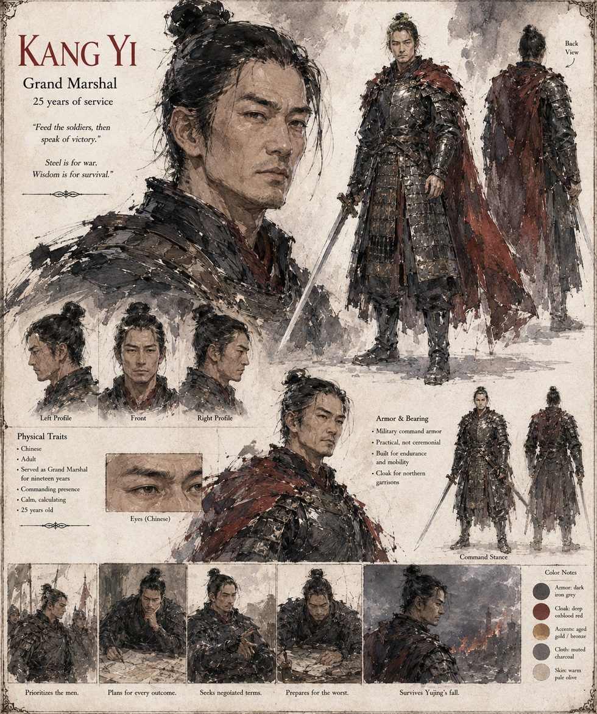

Kang Yi
Grand Marshal · commander of the northern garrisons · nineteen years of service
Commander of the northern garrisons, and the only senior officer of the empire the Second Trial somehow fails to consume, because the prince who wrote its list did not lift the brush when the Marshal's name occurred to him. During the siege he finds himself in the position every competent man in a collapsing empire eventually finds himself in: responsible for a defense he did not design, using an army he did not train, on behalf of an Emperor he did not choose and increasingly does not trust. He gives no speeches. He drills the wall crews at the hours he always has, delivers the same clipped, unornamented instructions, and sees to it that they eat — and it is that plain arithmetic of rice, more than anything the court's theologians offer, that holds the eastern wall.
He raises the possibility of a ceded province or a marriage alliance once, and only once, and reads in the Emperor's stillness that the answer is a decision already made. He comes closer than any man in the empire will to saying aloud what the Second Trial's own arithmetic made obvious — and does not, from the plain calculation that a marshal accused of treason defends nothing, while a marshal who holds his tongue might yet hold a wall. He opposes feeding the creature the palace's dwindling live carp with everything short of open refusal. By the end he is exchanging private letters with commanders on the far side of a wall that has not yet finished falling.
“Feed the soldiers, then speak of victory.”
Appears in The Heavenly Thunder-Serpent